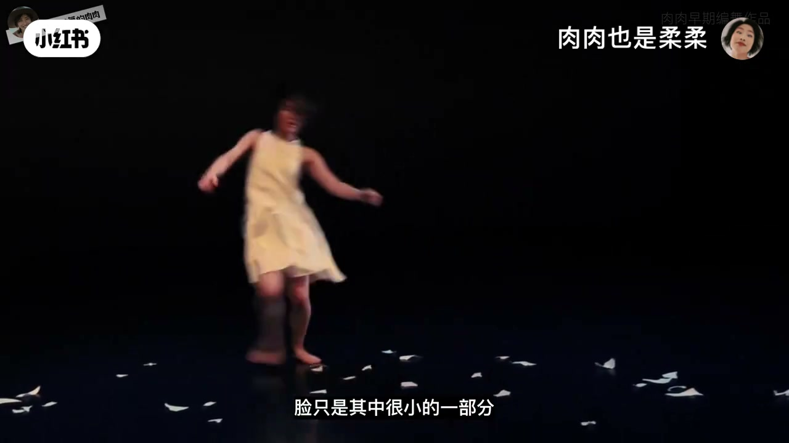
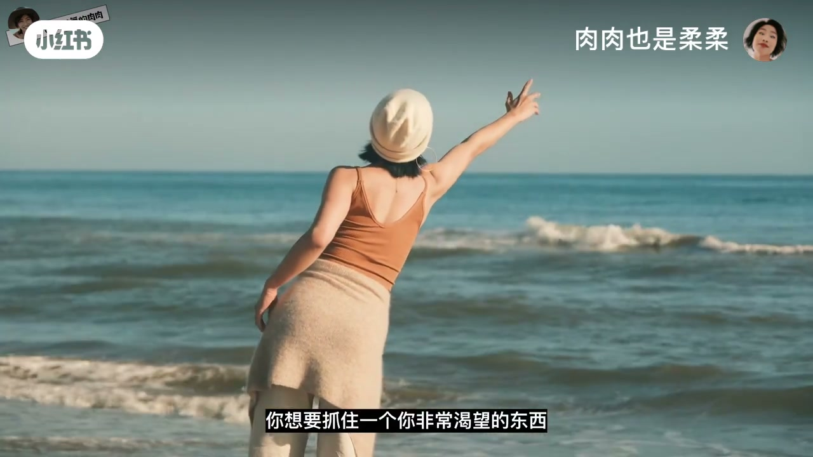
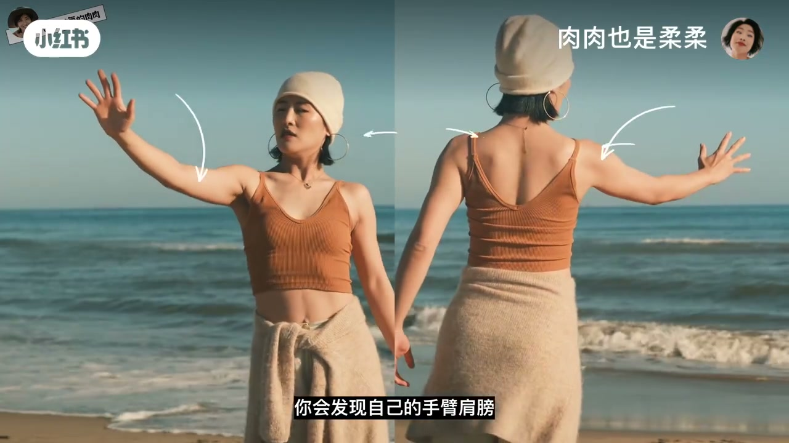
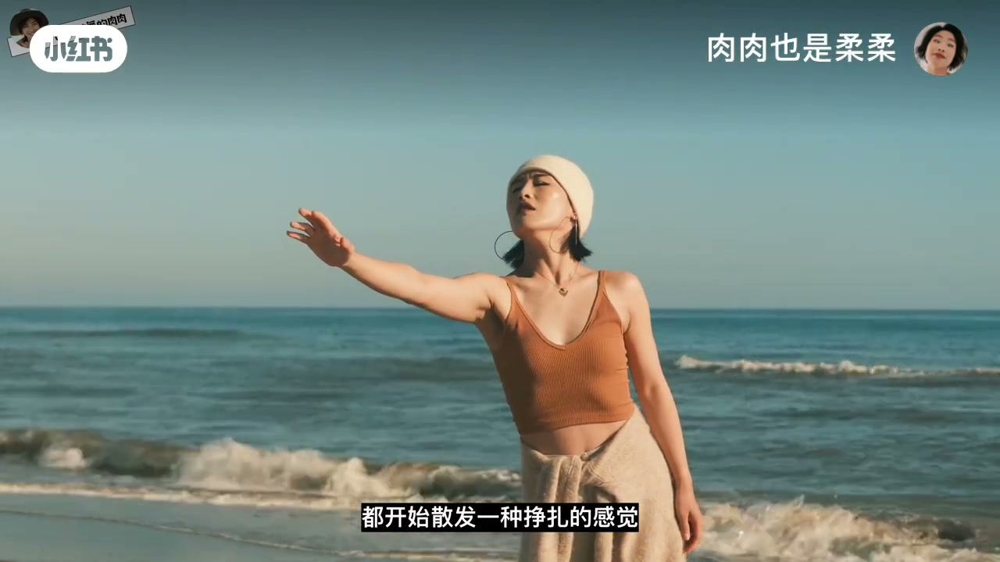
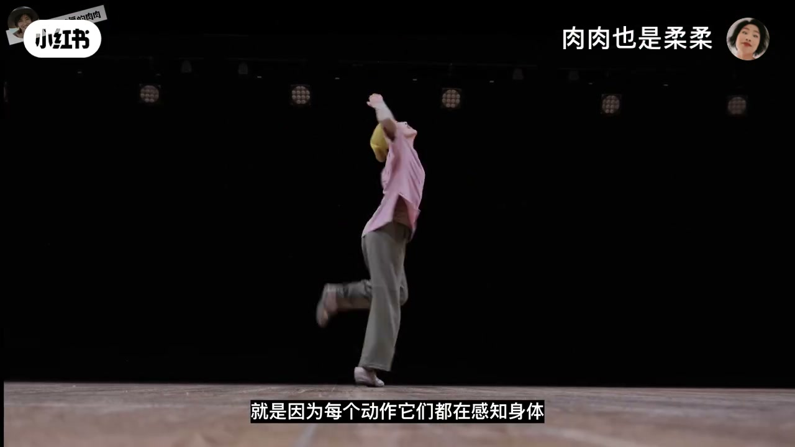
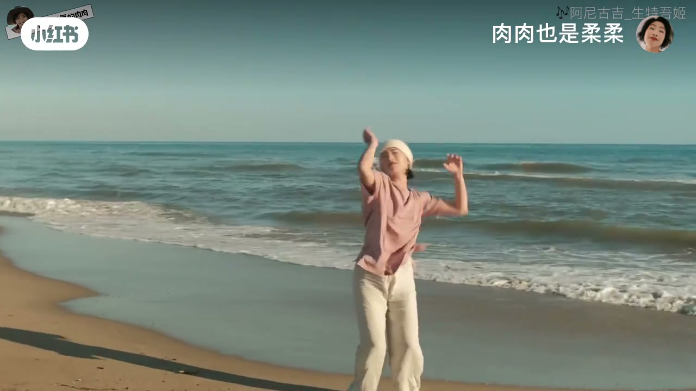
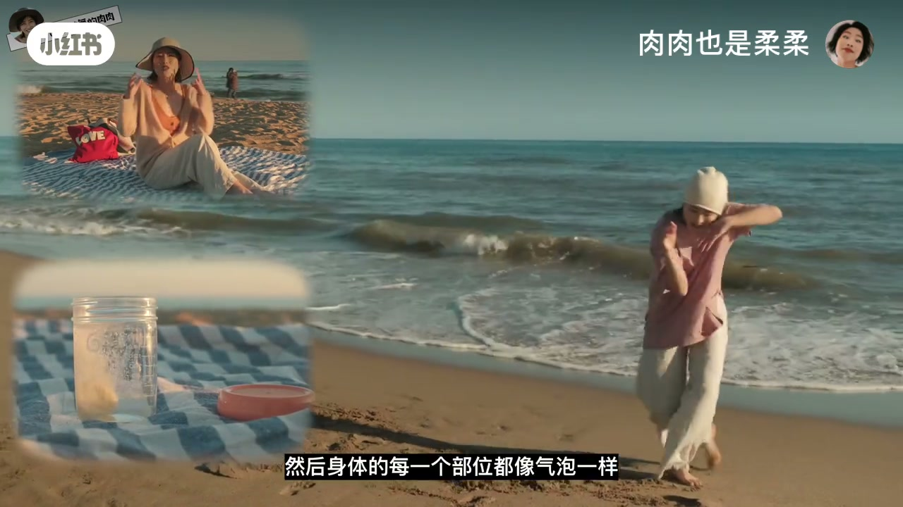

内容要点
「肉肉也是柔柔」拆舞感为两步：先放大身体体感，再学会感受音乐。开场反驳「练好表情管理就有舞感」——脸只是很小一部分；用「想抓住却够不到」的伸手示范，把手臂、肩膀、腹部的拉开感变成舞感入口，并点出科学上的具身认知循环。后半以跟曲示范收束：音乐先改心跳与肌肉状态，身体再把感觉散发出来。Whisper 将「舞感」误识为「无感/五感」，且约 04:12 后口播几乎断档（片长约 9.5 分钟），后段以画面跟跳为主。
知识结构
表情管理≠舞感；身体能表达更多感觉，不能没身体。
渴望却抓不到→把手勾得更远→臂肩腹拉开感=舞感来源。
体感激活真实表情；情绪再反作用于身体；K-POP 表情须身体先感受到。
开跳前音乐已改心跳呼吸；跟曲示范宽阔、洒脱、充满爱的身体发散。
舞感不是往脸上贴表情，而是「体感放大」与「被音乐泡开」两件事接上：身体先感受到，脸才画龙点睛。
00:00-02:12从「想抓住却够不到」进入体感
开场点破常见误区：有人以为练好表情管理就有舞感。画面舞者示范后强调——身体能表达很多不一样的感觉，脸只是其中很小一部分：「我们甚至可以不要脸，但不能没有身体」。舞感第一关键，是知道如何运用身体。
具体入口：想象要抓住非常渴望的东西（物件/人/梦想），不是靠脸，而是把手勾得更远。跟着做时，手臂、肩膀、腹部会出现被拉开的体感；这个拉开感就是舞感来源。对比「很想抓住」与「已经抓住」的动作幅度，情感与动作断连的人往往卡在不会用身体。



02:12-03:13具身认知：体感先于表情
当身体在体验拉开感时，情绪被激活，脸和眼神开始散发挣扎感——但这是真实表情，不是强加在脸上的尴尬状态。口播称此为具身认知（embodied cognition）：情绪又反过来影响身体，形成感受循环。
舞者表演有感染力，是因为每个动作都在感知身体、从一种体感切到下一种，力量才有强弱、速度才有快慢、情绪才有起伏。回应「K-POP/街舞很多面部表情」：那些表情只有在身体先感受到的前提下，才能画龙点睛，否则会很尴尬。


03:13-04:13第二关键：先被音乐改掉状态
感受身体只是一半；还有一样东西能在你还没开始动之前，就悄悄改变心跳、呼吸甚至肌肉状态——音乐。画面跟曲示范：这首歌给她宽阔、遥远洒脱、充满爱的感觉，整个人像「泡腾片掉进水里被泡开」，身体每一部位像气泡要把歌的感觉散发出来。
口播收在「拥有舞感的第二关键在于学会……」；其后约五分钟 ASR 几乎空白，画面以跟曲/表演段落为主（依据画面重建）。完整片长约九分半，后段宜当示范回放而非逐句口播笔记。


完整转录（102段）
以下文本由 Whisper medium 模型自动转录，可能存在少量识别误差，已尽可能修正。
有人说练好表情管理就会有无感
如果感觉不不不不不不
身体就能表达出很多不一样的感觉
脸只是其中很小的一部分
我们甚至可以不要脸
但是我们不能没有身体
所以拥有无感的第一个关键
是知道如何运用身体
具体怎么做呢
比如这个动作
你想要抓住一个你非常渴望的东西
可以是物件
是人
是梦想
我们要怎么表达
并不是靠脸
而是靠你的身体
看起来难度很大
其实不然
你要做的其实是放大你的体感
你想抓住它
但是你抓不到
所以你把手勾得更远
这时如果你在跟著我尝试的话
你会发现
自己的手臂
肩膀
腹部肌肉
都有被拉开的感觉
这个拉开的体感
就是你无感的来源
再来看一次
很想抓住一个东西
抓住一个东西
看到区别了吗
很多人的情感和动作是断连的
就是因为不知道具体该如何运用身体
而这个方法
给了你一个很明确的无感入口
我的学生最近就用这个方法
知道了什么时候延伸
什么时候放松
什么时候用力
无感有了很大的提升
同时当你的身体在体验这种感觉时
情绪会被激活
你的脸和眼神都开始散发一种
挣扎的感觉
但这个时候的表情是真实的
而不是强加在脸上的尴尬状态
这个现象在科学上
叫具身认知
Inbody的Cognition
然后情绪又反过来影响你的身体
形成一个感受循环
当你看到舞者在表演时充满感染力
就是因为每个动作
他们都在感知身体
从一种体感切换到下一个
力量就有了强弱
速度就有了快慢
情绪就有了起伏
而这一切都源于最简单的
从一个动作开始感受
可能有人会问
那K-POP和街舞里面
不是有很多面部表情吗
看著很有个性很酷啊
没错
但那些表情
只有在身体先感受到的前提下
才能起到画龙点睛的作用
不然就会很尴尬
然而感受身体只是一半
我们还要学会感受一样东西
它能在你还没开始动之前
就已经悄悄地改变了你的心跳
呼吸
甚至你肌肉的状态
能猜到是什么吗
看我跳一跳你就知道了
现在请别看我跳
边猜猜
除了身体
我们还需要学会
感受一样什么东西
没错
这就是音乐的魔力
这首歌它给我的感觉
是宽阔的
遥远洒脱
充满爱的
我在听的时候
整个人就感觉像
砲藤片掉进水里
被泡开的感觉
然后身体的每一个部位
都像气泡一样
要把这首歌的感觉
散发出来
所以拥有五感的第二个关键
在于学会